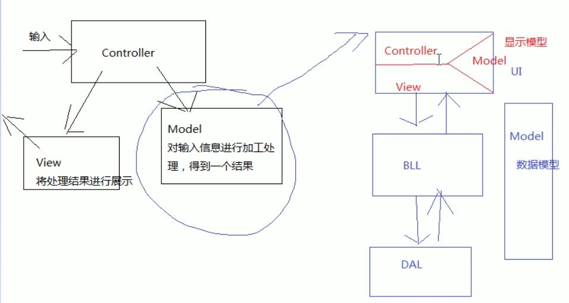
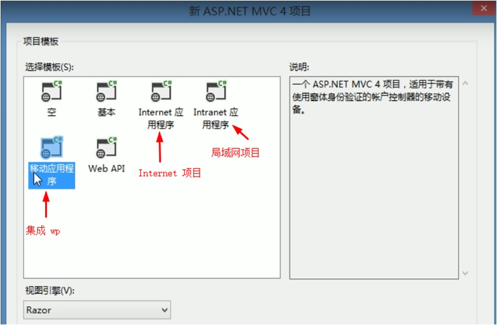
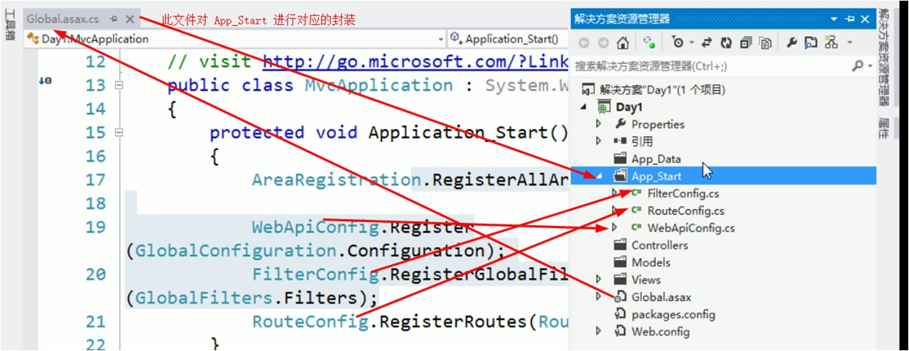
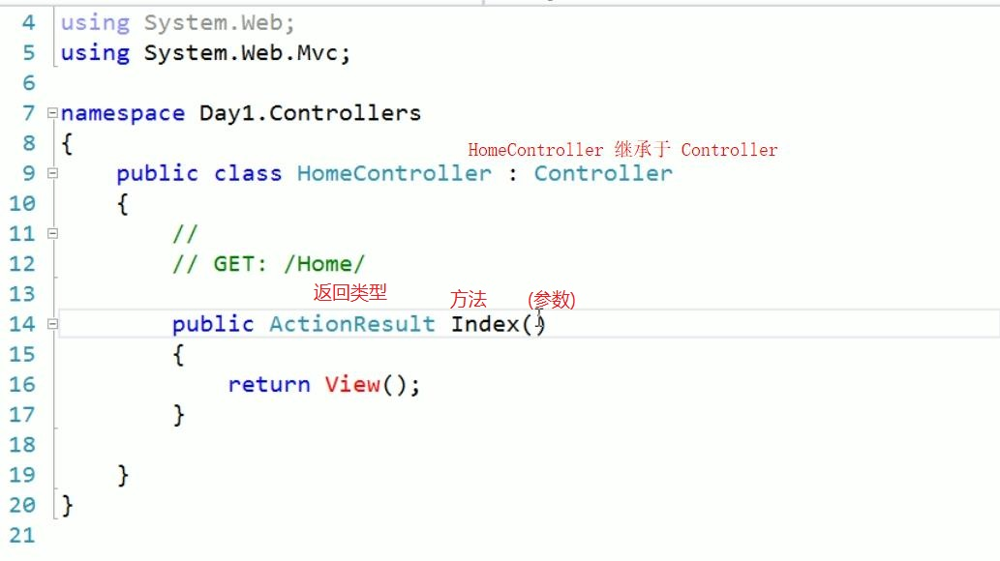

bilibili 上的视频教程笔记
概念
三层模式：是软件工程中的程序设计模式，是MVC设计思想的一种实现。
随着技术的发展，现在基本上已经将MNVC模式等同于三层模式
三层模式包括：U层，业务逻辑层，数据访问层，模型层
如果要严格区分，UI层指 Vew与 Controller，业务逻辑层、数据访问层、模型层都被包括在 Model 中
很多公司都在努力让自己的产品遵循MVC思想，其中微软的 Asp.Net MVC就是其中一款，这是一款对输入、输出进行分离的 UI 层框架
Asp.net MVC 是微软2009对外公布的第一个开源的表示层框架，这是微软的第一个开源项目。
它将 Web 应用程序分成三个主要组件即：视图(VieW)、控制器( Controller)、模型( Model)
Razor 是 MVC3.0 以后的视图引擎提供了 Razor、Aspx 两种方式
参考网址 http://www.asp.net/mvc
下图中 红色 显示 Model 和 蓝色数据库 Model，实际应用中用 显示 Model
显示数据，但实际上2者是不同的。

新建 MVC 项目(P2)
Razor 视图引擎(即在网页上以 @的方式写 c#代码)
@*服务端注释，并不会在客户的查看网页源代码中出现*@
<!--客户端注释,客户的查看网页源代码会看到-->

Global.asax.cs 的 Application_Start()方法 要执行的代码 对 App_Start\的类 封装

创建空白的 Controllers -> HomeControllers.cs
控制器内只定义方法就可以了
这些方法被称为"行为(Action)"

添加 Index 视图(使用 Rzaor 视图引擎)
看到10:52